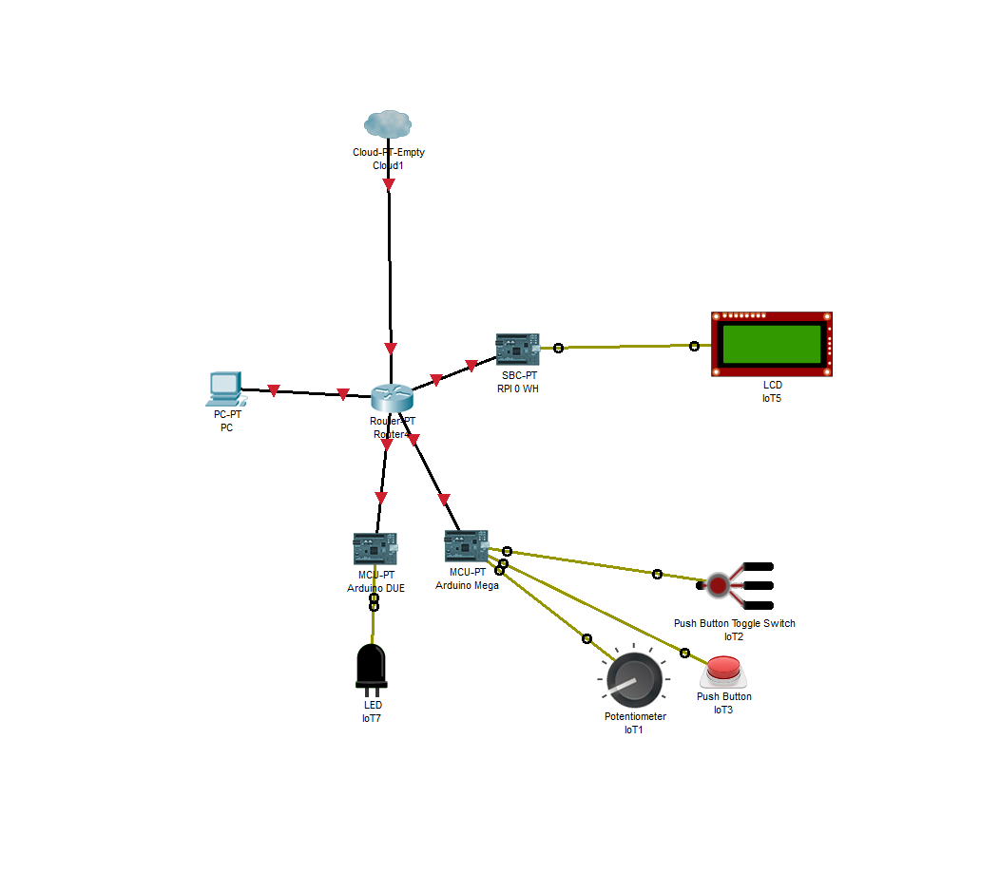

Myslím, že by som na začiatok mal povedať, prečo som si vybral práve túto "sočku". Už 3 roky študujem na Strednej Priemyselnej škole Dopravnej v Trnave. O vlaky som sa do strednej veľmi nezaujímal, čo sa zmenilo, keď som spoznal spolužiakov, ktorí boli do vlakov zažratí. Začali sme spolu hrávať simulátor, no po pár dňoch ma to prestávalo baviť. Klikať na tlačitka vo vlaku myšou nie je žiadna zábava. Tak mi napadlo, že by som si mohol vyrobiť niečo podobné, ako je trenažér na auto. Lenže na vlak. No a tak vznikla moja sočka, ktorú verím, že dokončím, aj keď nás ubíja korona, kvôli ktorej som sa dlho nevedel dostať do školy.
Rozmýšľali sme, akého inštruktora si vyberieme. Spýtali sme sa pána riaditeľa, a nášho triedneho pána učiteľa. Obaja súhlasili. Vypracoval som zoznam potrebných súčiastok (svetiel, pák, prepínačov, atď...) Náš pán triedny učiteľ momentálne zháňa všetky tieto potrebné veci.
Princíp fungovania je nasledovný: Ku Arduinu sú pripojené spínače, prepínače, tlačítka, kontrolky, páky. Tie vysielajú elektrický impulz, ktorý arduino číta. Následne pošle informáciu a stlačení cez Telnet (protokol) po sieti na PC, kde beží server a hra. Údaje o meracích prístrojoch zasa server číta z hry a posiela informácie Arduino, ktorý ovláda ručičky týchto meracích prístrojov servo motormi. Kontrolky a displej sú pripojené ku Raspberry Pi Zero WH, server rovnako posiela údaje, a Raspberry ich zobrazuje na displeji a rozsvecuje kontrolky.
Nechal som sa inšpirovať týmto videom. Dozvedel som sa však, že v Českej Třebovej je to poskladané z originálnych dielov, ktoré sa nám určite do rúk nedostanú. Tak sme to začali vyrábať. Postupne sme nakúpili železo na rám, ktorý sa zvaril dokopy. Dali sa naňho dosky, ktoré sú oblepené koženkou. Sú v nich vyvŕtané rôzne diery na všetky tlačítka a meráky.